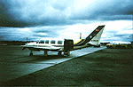

The BOREAS Information System
The BOREAS Information System
Remote Sensing Science (RSS)
RSS-19: Variation in Radiometric Properties of the Boreal Forest Landscape as a Function of the Ecosystem Dynamics
P.I.(s): John R. Miller -- York University
Co-I(s): Ellsworth LeDrew -- Univ. of Waterloo; Norman O'Neill, Alain Royer -- Univ. de Sherbrooke; P. Teillet, Karl Staenz, R. Gauthier, R. Neville -- CCRS; A. Hollinger -- Canadian Space Agency
Objectives: An airborne Compact Airborne Spectrographic Imager (CASI) were used to generate reflectance images (1km swath) on up to 8 dates spanning the Feb. to Sept. 1994 period. This database will be used along with AVIRIS, MEIS-II, SSM/I, Landsat and SPOT to determine:
- image-based methods to obtain surface reflectances from airborne optical imagery
- the effect of temporal/spatial variability of site albedos of the boreal forest in the winter-spring transition on the use of such data in numerical climate simulation models
- the utility of the area and spectral properties of beaver ponds for spatial scaling of measured trace gas emissions
- the role of seasonal changes in understory components to changes in reflectance of open boreal canopies
- the seasonal/temporal variation in closed canopy reflectance as a function of canopy architecture, species composition, canopy biophysical parameters of LAI and biomass, and phenologic development and chemistry of foliar components.
Go to the CASI/BOREAS WWW site.
RSS-19 Pictures
 The Ontario/York University Chieftain
RSS-19 Data Sets
Reflectance Spectra
CASI Level-1b images
CASI Level-2 images
Get some RSS-19 data using FTP (BOREAS Investigators only, password required). [FTP Help]
RSS-19 BOREAS Operations 1994
Objectives:
CASI Airborne Data Collection:
- Compact Airborne Spectrographic Imager (CASI) data collection for all five 1994 field campaigns - 36 flight days, 228.1 image collection hours.
- 4 CASI operating modes and 12 different mission plans to meet the scientific objectives of the RSS-19 group and collaborators -- 459 mission flights (i.e. image acquisitions over a specific target with a specific sensor configuration).
| CASI Missions | Location | Duration | Number
of Flights | Processing
Status | Access
Status |
| 1. Multiview Canopy Bi-directional Reflectance | 10 flux towers
NSA & SSA | all FFCs & IFCs | 57 | 0 | BG |
| 2. Canopy biochemistry - spectrometer mode | 10 flux towers
NSA & SSA | all FFCs & IFCs | 37 | 0
1 | BG |
| 3a. Site Mapping @ 1675 m AGL - spatial mode | 10 flux towers
NSA & SSA | all FFCs & IFCs | 48 | 0
1 | BG
BG,BO* |
| 3b. Site Mapping @ 600 m AGL - spatial mode | 10 flux towers
NSA & SSA | all FFCs & IFCs | 48 | 0
1 | BG |
| 4. Stem Mapping @ 150 or 300m AGL - CIR spatial mode | 10 flux towers
NSA & SSA | all FFCs & IFCs | 28 | 0
1 | BG |
| 5. PAR and Spectral Albedo @ 150 m AGL- from up & down spectral irradiance | 10 flux towers
NSA & SSA | all FFCs & IFCs | 53 | N | - |
| 6. Lake transects @ 1675 m | Wask & Candle Lake SSA | IFC 1, 2, & 3 | 10 | 0
1 | BG |
| 7. Beaver ponds | NSA | IFC 1, 2 & 3 | 9 | 0
1 | BG |
| 8. Auxiliary sites @ 1675 m AGL - spatial mode | NSA & SSA | all FFCs & IFCs | 135 | 0
1 | BG |
| 9. ET transects @ 2.5 km AGL | SSA <-> NSA | all FFCs & IFCs | 5 | N | - |
| 10. Snow Course lines | SSA & NSA
• FFC-W | FFC-W | 37 | 0
1 | BG |
| 11. Agriculture Lines | PA to SSA | FFC-T and
IFC 1,2 & 3 | 4 | 0
1 | BG |
| 12. Atmospheric Correction Methodology study - multi-altitude & flights over characterized ground targets | SSA | IFC-2 | 40 | 0
1 | BG |
N - not yet processed
0 - quick-look gifs
1 - at-sensor radiance
2 - at-sensor reflectance
3 - surface reflectance
BO - BORIS
BG - ISTS (RSS-19 WWW site at URL: http://www.eol.ists.ca)
Field Data Collection Completed (analysis status as indicated):
Scientists associated with RSS-19 were at the BOREAS sites at all FFCs and IFCs. The field activities carried out are outlined in detail below.
A. Canopy Radiative Transfer input parameters:
- canopy architecture
- vectorization - to obtain the 3-D distribution of canopy elements and tree form i.e. branching structure, age, DBH, Ht, length of live crown:
- where: YJP - 4 trees; OJP: 3 trees; OA: 2 trees + 1m2 hazel
- data status: data processed for YJP (4 trees) and OJP (3 trees), ready for submission to BORIS. Documentation in progress. (Contact R. Landry, CCRS)
- site characterization - on detailed referenced grid (normally 50 x 60 m)
- X-Y location of trees, DBH,, Ht, live crown Ht & radius in cardinal directions, dominance class, understory cover (in 10 m x 10m subplots)
- where: - SSA: OA, OBS, OJP, YJP, 4 mixed OA/white spruce
NSA: OA, OBS, OJP, YJP, YA aux site
- data status: submitted to BORIS (Contact R. Fournier, TE-23)
- branch BRF: bidirectional spectral reflectance using spectrometer & goniometer (JPL)
- where: adjacent to sites OBS, OJP, OA
- data status: data processing in progress (but data not yet reached level suitable for submission )
- needle reflectance and transmittance (r,t) spectral properties, and shoot bi-directional reflectance
- where: YJP, OJP, OBS tower sites at the NSA & samples from SSA at each IFC
- data status: NSA needle r,t data processing completed, documentation in progress.
- understory mean spectral reflectance: seasonal variation from all 5 campaigns
- where: flux tower sites at both SSA and NSA
- data status: analysis complete, submitted to BORIS
- BRF of selected understory dominant components:
- IFC-2:- where: SSA: OJP, OBS ( moss & lichen) - some vis/NIR; some vis to SWIR
- IFC-3: - where: SSA & NSA (vis/NIR)
- data status: data processing in progress (but data not yet reached level suitable for submission )
- Tower-based canopy spectroradiometric signatures
- FFC-W: where - SSA-OJP - (sunlit & shadowed) component signatures 400 to 850 nm
- FFC-T & IFC-3: where - SSA & NSA - canopy BRF & endmember spectra
- data status: FFC-W data analysis complete
B. Atmospheric Correction Methodology Evaluation:
- BRF characterization of standard ground targets:
- where airport tarmac & canvas panels
- status: analysis in progress
- optical depth data collection
- IFC-2: - where - Prince Albert airport
- data status: analysis complete and rationalized through interchanges with OD data by Markham RSS- & Wrigley
- airborne spatial variability characterization
- - airborne zenith sky, global irradiance Spectron data SSA (collaboration with Wathall
- - Status: analysis in progress
- Atmospheric Correction Model Validation Intercomparison
- status: - internal report prepared on benchmark results for standard McClatchey
- atmosphere for 10 altitudes, including typical C-130, Chieftain & ER-2 altitudes
Click on a team designation to go to that page.
RSS Overview || RSS-1 | RSS-2 | RSS-3 | RSS-4 | RSS-5 | RSS-6 | RSS-7 | RSS-8 | RSS-9 | RSS-10
RSS-11 | RSS-12 | RSS-13 | RSS-14 | RSS-15 | RSS-16 | RSS-17 | RSS-18 | RSS-19 | RSS-20
 Send a data request to the BOREAS Data Manager (BOREAS Investigators only)
Send a data request to the BOREAS Data Manager (BOREAS Investigators only)
E-Mail a comment on this page to the curator 
Send e-mail to Jaime Nickeson, the BORIS representative for the RSS group
Return to the RSS Overview
Return to the BOREAS Science Groups Overview
Return to the BOREAS Home Page
Last Updated: October 28, 1997
{kind=link}